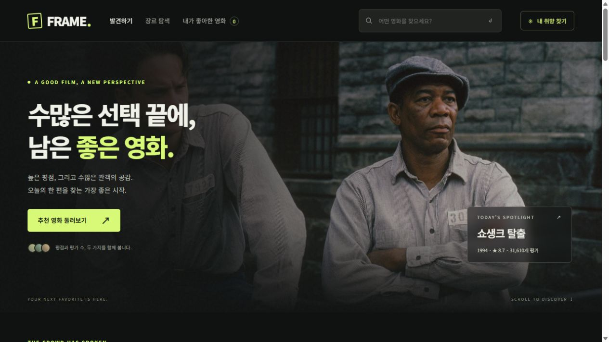

문제 01 · 같은 영화가 반복되는 선택지
준비되지 않은 추천을 구분했습니다.
개인별 평가가 부족할 때 각 버튼이 같은 인기 목록을 반환해 추천 방식의 차이를 알기 어려웠습니다. 사용 가능 여부와 준비 안내를 응답에 담고, 대체 목록을 fallback_items로 분리했습니다.
CASE STUDY · RECOMMENDATION SYSTEM
추천 알고리즘을 공부하는 데서 출발해, 실제로 영화를 찾고 평가할 수 있는 사이트를 만들었습니다. 인기의 근거와 개인 취향의 근거를 구분하고, 추천할 수 없는 순간도 솔직하게 설명하는 것이 이 프로젝트의 기준입니다.
2026년 10월 20일 개발 환경에서 확인한 수치입니다. 추천 품질이나 이용자 수를 뜻하는 지표는 아닙니다.
01 / THE QUESTION
몇 명만 평가한 9점짜리 영화와 수만 명이 평가한 8점짜리 영화를 단순 평균만으로 비교하기는 어렵습니다. 첫 화면에서는 평점과 평가 수를 함께 고려한 영화를 보여주고, 취향을 알려주면 개인화된 추천으로 이어지는 흐름을 설계했습니다.
첫 방문
전체 인기 영화와 장르별 인기 영화를 먼저 제공합니다. 추천받기 전에 복잡한 가입이나 알고리즘 선택을 요구하지 않습니다.
취향이 쌓이면
좋아요와 직접 남긴 별점으로 추천을 만들고, 카드에 실제 추천 근거를 표시합니다. 데이터가 부족한 기능에는 준비 상태를 안내합니다.
02 / THE EXPERIENCE
처음 방문한 순간부터 영화를 고르기까지, 실제 화면을 순서대로 넘겨볼 수 있습니다.

대표 영화와 함께 사이트의 기준을 소개합니다. ‘추천 영화 둘러보기’로 인기 영화부터 탐색할 수 있습니다.
버튼·좌우 방향키로 넘길 수 있어요. 모바일에서는 좌우로 밀어보세요. 이미지를 누르면 크게 열립니다.
03 / DATA DESIGN
TMDB의 평균 평점은 한 영화에 대한 집계 값입니다. 이것만으로는 “누가 어떤 영화를 함께 좋아했는가”를 알 수 없습니다. 영화 정보와 개인별 평가를 분리해 추천에 사용하는 역할을 명확하게 정했습니다.
| 데이터 | 출처와 저장 | 사용 목적 |
|---|---|---|
| 영화 정보·관객 평점 | TMDB → 영화 카탈로그 SQLite 평균 평점 10점 만점·평가 수·장르·줄거리 | 인기 순위와 콘텐츠 유사도 |
| 개인별 직접 별점 | 사이트 방문자 → 별도 프로필 SQLite 프로필별 TMDB 영화 ID와 0.5~5점 평가 | 사용자·아이템·잠재요인 추천 |
| 좋아요·선호 장르 | 브라우저에 보관 좋아요와 별점은 별개 입력 | 개인 취향의 기준과 장르 탐색 |
운영 사이트는 TMDB 영화와 실제 방문자 평가만 사용합니다. MovieLens 노트북은 알고리즘을 공부한 참고 자료이며 운영 모델의 입력으로 연결하지 않았습니다. 브라우저에는 프로필 연결 토큰을 보관하고, 서버에는 토큰의 해시를 저장합니다.
최근 개봉작은 연도별로 조회한 뒤 TMDB ID로 중복을 합쳤습니다. 비성인·개봉 완료·평가 100개 이상 조건을 적용하고, 수집이 모두 끝난 뒤 기존 카탈로그에 반영해 중간 실패로 데이터를 잃지 않게 했습니다.
04 / RECOMMENDATION LOGIC
| 추천 방식 | 구현한 계산 | 필요한 근거 |
|---|---|---|
| 인기 기반 | 전체 평균으로 보정한 가중 평점. 평가가 적은 고평점의 과대평가를 줄입니다. | TMDB 평균 평점과 평가 수 |
| 콘텐츠 기반 | 장르 벡터와 줄거리 문자 n-gram TF-IDF의 코사인 유사도를 0.4 : 0.6으로 결합합니다. | 좋아요 또는 직접 4점 이상 준 영화 |
| 사용자 기반 | 사용자 평균을 보정한 평가 벡터의 코사인 유사도로 이웃을 비교합니다. | 여러 방문자의 공통 영화 평가 |
| 아이템 기반 | 공통 평가자의 Pearson 상관계수를 사용하고, 공통 평가 수에 따라 유사도를 보정합니다. | 여러 사람이 함께 평가한 영화 |
| 잠재요인 기반 | scikit-surprise의 SVD로 사용자·영화 요인을 학습하고 예상 별점을 계산합니다. | 학습 가능한 실제 평가와 저장된 프로필 |
인기 점수 = (평가 수 × 영화 평균 평점 + 1,000 × 전체 평균 평점) / (평가 수 + 1,000)
‘당신이 좋아할 거예요’는 콘텐츠 추천을 우선 사용하고, 후보가 부족하면 선택 장르의 인기 → 전체 인기 순으로 보완합니다. 사용자·아이템·잠재요인 추천을 직접 골랐는데 근거가 부족하면, 다른 인기 목록을 그 알고리즘의 결과인 것처럼 표시하지 않습니다.
SVD는 scikit-learn과 별개의 라이브러리인 scikit-surprise를 사용합니다. 학습 시점 이후 바뀐 평가나 학습에 없는 프로필에는 이전 사용자 요인을 그대로 적용하지 않습니다.
05 / WHAT I FIXED
문제 01 · 같은 영화가 반복되는 선택지
개인별 평가가 부족할 때 각 버튼이 같은 인기 목록을 반환해 추천 방식의 차이를 알기 어려웠습니다. 사용 가능 여부와 준비 안내를 응답에 담고, 대체 목록을 fallback_items로 분리했습니다.
문제 02 · 취향 기준까지 사라진 제외 처리
별점을 준 영화를 결과에서 빼면서 콘텐츠 추천의 입력에서도 지우는 오류가 있었습니다. 높은 별점의 영화는 유사도 계산에 참여하고 결과에서만 빠지도록 수정했습니다. 테스트에서 실제 유사도와 추천 이유를 확인했습니다.
문제 03 · 알고리즘 이름이 앞서는 화면
‘사용자 기반’ 대신 ‘비슷한 취향의 선택’, ‘잠재요인’ 대신 ‘새로운 발견’으로 표현했습니다. 기준이 거의 같던 기본·콘텐츠 추천 버튼도 하나로 합쳤습니다.
문제 04 · 팝업 밖에서 바뀌는 추천
장르 선택 결과를 팝업 안에서 보여주고 자동 스크롤을 제거했습니다. 저장 전 임시 입력과 저장된 취향도 분리해 닫기와 저장의 동작을 예측할 수 있게 했습니다.
06 / SIMPLE, REPLACEABLE CODE
Selection 반환 규약을 따릅니다.07 / VALIDATION & LIMITS
자동 테스트 33개를 통과했고, 개발 서버에서 여섯 추천 API 경로(기본·콘텐츠·최근 개봉·사용자·아이템·SVD)를 확인했습니다. 테스트 예제와 모델은 임시 저장소에 두고 운영 평가에 섞지 않았습니다. 브라우저에서는 팝업 입력 취소, 장르 선택 시 스크롤 유지, 모바일 가로 넘침을 확인했습니다.
여러 사람의 직접 평가가 충분하지 않아 협업·잠재요인 추천의 실제 품질은 아직 평가하지 않았습니다. 테스트 통과는 추천 정확도를 의미하지 않으므로 RMSE나 적중률을 성과로 제시하지 않습니다. 다음 검증은 실제 평가가 쌓인 뒤 학습·검증 데이터를 나누고 인기 추천과 비교하는 것입니다.
로그인과 기기 간 동기화는 구현 범위에 포함하지 않았습니다. 브라우저의 프로필 연결 정보가 사라지면 기존 평가로 자동 복구되지 않습니다. 외부 공개 서비스 배포도 후속 과제입니다.
08 / WHAT I LEARNED
이 프로젝트에서 크게 배운 것은 알고리즘의 종류보다 어떤 데이터가 그 추천을 뒷받침하는지 먼저 확인해야 한다는 점입니다. 영화의 평균 평점과 개인의 별점을 구분하고, 데이터가 부족한 상황을 설명하고, 사용자가 이해할 수 있는 선택지를 만드는 일도 추천 시스템의 일부였습니다.
VS Code와 Codex를 활용해 구현과 검증을 반복했습니다. 기능이 돌아가는 것에서 멈추지 않고, 실제 사용 중 드러난 입력·화면·데이터 흐름의 문제를 고친 과정을 함께 기록했습니다.
저장소의 README에 따라 Python·uv 환경과 본인의 TMDB 인증 정보를 준비합니다. .env와 운영 데이터는 Git에서 제외했습니다.
git clone https://github.com/fonaa8220-dev/movie_recommendation.git
cd movie_recommendation
uv sync --frozen
# .env에 본인의 TMDB 인증 정보 설정
uv run recommended-system collect --target 2000
uv run recommended-system launchWindows에서는 환경과 인증 정보를 준비한 뒤 run.bat로 실행할 수 있습니다. 이 정적 블로그는 프로젝트 소개를 제공하며 Python 서버 실행은 별도입니다.
영화 정보와 화면 속 포스터의 출처: TMDB. This product uses the TMDB API but is not endorsed or certified by TMDB.